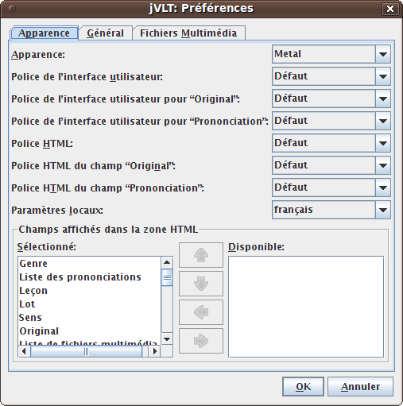
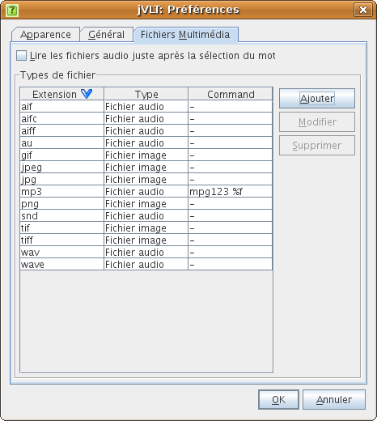

jVLT - outil d’apprentissage du vocabulaire
Préférences
Paramètres d’apparence
Dans l’onglet “Apparence”, on peut modifier l’apparence, les polices de caractère, la langue de l’application et les champs affichés dans la zone HTML. En ce qui concerne le choix d’une police, soit on peut utiliser celle par défaut, soit une police personnalisée en choisissant “Choisir une police…” dans le menu déroulant local.- Apparence : Cette option détermine l’apparence générale de l’application. Les choix disponibles dépendent du système de votre ordinateur.
- Police de l’interface utilisateur : La police de l’interface utilisateur est utilisée pour tous les composants sauf la vue détaillée des mots et des exemples, ainsi que pour les éléments pour lesquels la police est fixée par les deux paramètres suivants. Veuillez noter que la modification de cette police n’est possible que si l’apparence “Métal” est utilisée.
-
Police d’interface utilisateur pour “Original” : Cette police est utilisée pour les mots et les exemples de la langue de départ.
- Police d’interface utilisateur pour “Prononciation” : Pour la prononciation, une police personnalisée peut également être définie.
- Police HTML : Cette police est utilisée pour les zones HTML dans les onglets Vocabulaire, Exemples et Quiz.
- Police HTML du champ “Original” : Ce paramètre détermine la police du champ “Original” dans la vue détaillée.
-
Police HTML du champ “Prononciation” : Vous pouvez aussi choisir la police d’affichage de la prononciation dans la vue détaillée.
- Paramètres locaux : Ce paramètre détermine la langue de l’interface de l’application.
- Champs affichés dans la zone HTML : C’est ici que vous pouvez choisir quels champs afficher dans la vue détaillée de l’onglet Vocabulaire.

Paramètres généraux
Dans l’onglet "Général" vous pouvez actuellement effectuer le paramétrage suivant :- Au démarrage, réouvrir le dernier fichier ouvert : Si vous cochez cette case, jVLT se souviendra du fichier sur lequel vous avez travaillé lors de la session précédente et le chargera au démarrage.
-
Police d’impression : Vous pouvez soit utiliser la police par défaut pour l’impression, soit choisir une police personnalisée en choisissant l’option de menu “Choisir une police…” dans le menu déroulant local.

Durée d’expiration
La durée d’expiration détermine le moment où un mot redevient actif après un quiz (voir la section Quiz). Il y a trois paramètres pour modifier la date d’expiration :
- Nombre de lots : Le numéro maximum du lot assigné à un mot. Si un mot qui se trouve déjà dans le lot au numéro le plus élevé est su pendant un quiz, son numéro de lot ne change pas (en principe il augmente d’un).
- Facteur d’expiration : Détermine le moment (le nombre d’unités de temps) après lequel un mot redevient actif. Si X est le facteur d’expiration, un mot assigné au lot n° i se réactive après Xi-1 unités de temps. C'est à dire, un mot du lot n° 1 redevient actif après une unité de temps, un mot du lot n° 2 après X unités de temps, un mot du lot n° 3 après X2 unités de temps, etc.
- Unité : L’unité de temps peut être soit en jours, soit en heures.
Paramètres des fichiers multimédia
Dans cet onglet, vous pouvez décider comment jVLT gérera les fichiers multimédia specifiés dans la fenêtre de mots.
- Lire les fichiers audio juste après la sélection du mot : Si cette case est coché, jVLT lira automatiquement les fichiers audio quand vous choisirez un mot dans la liste de mots.
Types de fichier
Dans la zone “Types de fichier”, on peut définir des commandes
externes pour afficher ou lancer des fichiers multimédia. Cliquer sur
“Modifier” ou “Ajouter” ouvre une nouvelle boîte de dialogue qui vous
permet d’éditer un certain type de fichier. La signification des
éléments de la fenêtre de dialogue est décrite ci-dessous :
- Extension de fichier : L’extension de fichier, par exemple “mp3”. Pour les types de fichier par défaut, cette valeur ne peut pas être modifiée.
- Type: Le type de fichier. Ce paramètre est optionnel, il ne fait que déterminer quelle icône es t utilisée dans la vue détaillée.
- Utiliser jVLT to lire/montrer :Vous ne pouvez cocher cette case que pour les types de fichier par défaut. Si elle est cochée, jVLT lui-même essaiera de lancer le fichier au lieu d’utiliser une commande externe.
- Commande : La commande pour lancer ou afficher un fichier portant cette extension. Vous devrez ajouter %f pour remplacer le nom de fichier.